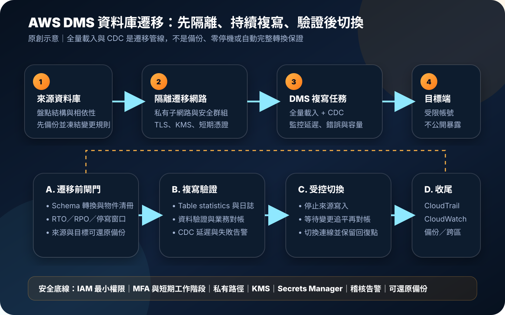

AWS Database Migration Service：資料庫遷移與持續複寫基礎
AWS Database Migration Service（AWS DMS）是受管資料庫遷移與複寫服務，可在來源持續運作時執行全量載入與持續變更複寫。它降低複寫引擎的自建負擔，但不會自動解決所有 Schema 差異、資料品質、應用相容性、零停機、備份或切換治理。
作者：Dr. William｜查閱與發布：2026-11-21
服務定位
AWS DMS 用於同質或異質資料庫遷移、持續複寫與部分資料整合。來源與目標可以是 AWS 上的資料庫、自建環境或其他可連線的資料平台；實際支援範圍取決於引擎、版本、區域、端點設定與任務模式。
傳統 AWS DMS 架構使用複寫執行個體承載任務；AWS DMS Serverless 則以複寫設定描述來源、目標、網路與容量邊界，由服務自動佈建與調整底層複寫資源。兩種模式都需要建立來源端點、目標端點、網路連通、任務或複寫設定、監控與切換程序。
DMS 的核心價值是把資料搬移與變更擷取管線服務化。它不是資料庫備份服務、Schema 自動完整轉換器、應用測試平台，也不代表目標資料庫已具備高可用、正確索引、適當參數、最小權限或跨區復原。
核心概念
資料移動元件
- Source endpoint：DMS 讀取現有資料與交易日誌的位置。
- Target endpoint：DMS 寫入全量資料與後續變更的位置。
- Replication instance：傳統模式下執行複寫任務的受管運算與記憶體資源。
- Replication configuration：Serverless 模式下定義網路、端點、設定與容量範圍。
- Full load：把選定表格的既有資料載入目標。
- Change data capture（CDC）：持續讀取來源變更並套用到目標。
驗證與治理元件
- Table mapping：選擇或轉換要遷移的 Schema、表格與欄位。
- Task settings：定義錯誤處理、日誌、批次、目標建表、LOB 與驗證行為。
- Data validation：比較來源與目標資料，揭露不一致項目。
- CDC latency：來源已產生但尚未擷取或套用的變更延遲。
- Premigration assessment：在執行前檢查部分設定與相容性問題。
- Cutover gate：停寫、追平、對帳、核准、切換與回復條件。
適合與不適合的使用情境
適合
- 把受支援的同類資料庫搬到 Amazon RDS、Amazon Aurora、Amazon Redshift 或其他支援目標。
- 從商用或開源資料庫遷移到不同引擎，且可用 AWS Schema Conversion Tool 或其他方式處理 Schema 差異。
- 希望先全量載入，再用 CDC 縮短最終停寫與切換窗口。
- 需要持續複寫資料到分析、整合或測試用途，並能接受 DMS 支援矩陣與資料一致性邊界。
- 可在來源啟用必要交易日誌、保留期間與權限，並具備完整測試、對帳與回復程序。
不適合或不能單獨完成
- 要求零資料遺失或零停機，卻沒有來源停寫、CDC 追平、最終對帳與連線切換設計。
- 假設所有預存程序、函式、觸發器、排程、權限、同義詞與資料型別都會自動正確轉換。
- 來源交易日誌無法提供必要變更、保留時間不足，或來源不允許 DMS 所需權限與設定。
- 把 DMS 當成長期備份，卻沒有來源與目標的原生備份、保留政策、跨帳號／跨區副本與還原演練。
- 工作負載依賴嚴格交易順序、複雜大型物件、低延遲同步或特殊引擎功能，且未完成服務限制驗證。
- 目標資料庫尚未完成容量、索引、參數、高可用、維護、監控與資安基準設計。
示意故事案例：將會員資料庫移轉到 Aurora PostgreSQL
以下為示意案例，不代表特定企業或正式部署。 一家零售公司準備把自建 PostgreSQL 會員資料庫移到 Amazon Aurora PostgreSQL。團隊先建立表格、資料量、交易量、延伸模組、函式、觸發器、批次、BI 查詢與外部介面的清冊，並以應用測試確認目標引擎版本相容。
來源與目標先建立可還原備份。DMS 複寫資源部署在私有子網路，安全群組只允許到來源與目標資料庫的必要連線；操作人員透過聯合身分、MFA 與短期工作階段管理。端點機密由 Secrets Manager 保存，DMS 資源使用 KMS 加密，CloudTrail 與 CloudWatch 記錄控制面與任務狀態。
團隊先執行全量載入，再啟用 CDC。驗證不只查看任務顯示為成功，還包含資料驗證、會員筆數、訂單關聯、抽樣雜湊、財務對帳與應用回歸。切換窗口停止來源寫入，等待 CDC 延遲降到可接受範圍並完成最終對帳，再更新應用程式連線。觀察期通過後才停止任務；來源與目標備份、切換紀錄及跨區復原演練仍持續保留。

建置與運作流程
- 盤點來源與目標引擎、版本、區域、資料量、每日變更量、尖峰交易、Schema 物件、LOB、字符集與相依應用。
- 確認來源與目標在 AWS DMS 支援矩陣內，並核對端點、任務模式、資料型別與已知限制。
- 定義 RTO、RPO、允許停機、資料遺失容忍度、驗證門檻、切換核准人與回復截止點。
- 建立來源與目標的可還原備份，完成實際還原測試並記錄還原時間。
- 評估同質或異質遷移；異質遷移先完成 Schema 轉換、程式物件改寫與版本控制。
- 在來源啟用 DMS 所需交易日誌、補充記錄、保留期間與最小資料庫權限。
- 建立私有複寫子網路群組、路由、安全群組、DNS 與必要 VPC endpoint；避免不必要的公開 IP。
- 選擇傳統複寫執行個體或 DMS Serverless，依資料量、變更率、任務數與維護需求設定容量。
- 以 Secrets Manager 保存端點認證資料；限制 DMS 服務角色、Secrets 存取與 KMS 金鑰政策。
- 建立來源與目標端點並執行連線測試；確認 TLS、憑證、DNS、路由與防火牆皆符合設計。
- 建立 table mapping，明確選擇 Schema 與表格；先在非正式環境驗證任何轉換規則。
- 執行 premigration assessment，修正不支援資料型別、主鍵、LOB、編碼、容量與權限問題。
- 設定任務的 full load、CDC、錯誤處理、重試、日誌、資料驗證與目標建表策略。
- 先以代表性資料集測試，再執行全量載入；監控 CPU、記憶體、儲存、吞吐、日誌與失敗表格。
- 啟用 CDC 後監控來源與目標延遲，確認來源日誌保留足以承受中斷與維護。
- 執行 DMS 資料驗證，另以業務規則、列數、總額、關聯、抽樣與應用回歸完成獨立對帳。
- 切換前停止會改變 Schema 的部署，確認目標索引、限制、參數、權限、監控、備份與高可用。
- 在核准窗口停止來源寫入，等待 CDC 追平，完成最終資料與交易對帳。
- 切換應用連線、DNS 或設定，逐步放量並監控錯誤率、延遲、資料一致性與業務指標。
- 觀察期內保留來源、任務與回復能力；重大異常依既定條件回復，不以臨場決定取代演練。
- 通過觀察期後停止任務，撤銷臨時權限與機密，清理不用的複寫資源、日誌與網路規則。
- 把目標資料庫納入 CloudWatch、CloudTrail、Config、KMS、備份、跨區復原、成本與容量治理。
成本、可用性與維運考量
傳統 AWS DMS 的主要成本來自複寫執行個體運行時間、儲存與資料傳輸；Serverless 依實際使用的 DMS Capacity Units 與相關資源計費。CloudWatch Logs、Secrets Manager、KMS、NAT Gateway、VPC endpoint、來源與目標資料庫、備份及跨區資料傳輸也可能產生成本。長時間保留停止或閒置任務，不代表相關資源一定停止計費。
容量不足會造成全量載入時間延長、CDC 延遲上升、磁碟壓力或任務不穩定。容量過大則增加閒置成本。應以實際資料量、LOB、平行載入、每日變更量、任務數與切換期限進行壓力測試，不能只按資料庫總容量選型。
傳統複寫執行個體可使用 Multi-AZ 提升可用性，但發生故障轉移時任務仍可能暫停；全量載入期間的主機替換也可能導致部分表格載入失敗。DMS Serverless 的底層資源由服務管理，不代表來源、目標、網路或應用連線具備跨可用區或跨區韌性。切換設計仍需涵蓋來源與目標資料庫高可用、備份、跨區副本及回復演練。
AWS DMS 特有資安風險與控制
- 端點憑證外洩：不得把資料庫密碼或連線機密寫入 HTML、腳本、標籤、user data、任務匯出檔或日誌。優先使用 Secrets Manager，縮限可讀取該 secret 的 DMS 服務角色與人員。
- 來源帳號權限過大：依引擎文件只授予讀取資料、交易日誌與必要中繼資料權限；不要讓遷移帳號兼具日常 DBA 或任意管理能力。
- 目標帳號可破壞過多物件：依建表策略分離預先建置 Schema 與資料寫入權限，限制 DROP、ALTER、使用者管理與非必要 Schema。
- 複寫資源公開暴露：使用私有子網路、受限路由與安全群組；只允許複寫資源到明確來源與目標的必要連接埠。
- 跨網路資料未妥善保護：端點支援時強制 TLS 並驗證憑證；混合環境使用 VPN、Direct Connect 或其他受控路徑，避免任意網際網路暴露。
- KMS 權限或金鑰狀態中斷：DMS 資源建立時明確選擇合適 KMS 金鑰，限制 key policy 與 grant。官方文件說明複寫執行個體建立後不能直接更換其 KMS 金鑰，設計前需完成權限與生命週期審查。
- 選取規則搬走過多資料：table mapping 採明確允許清單，避免萬用規則誤納敏感 Schema、歷史表、稽核表或不必要欄位。
- 轉換規則破壞語意：欄位重新命名、型別轉換、遮罩與過濾規則必須版本化、雙人審查並以代表性資料測試。
- 全量載入造成來源壓力：限制平行度、安排窗口並監控來源 CPU、I/O、鎖與網路；必要時從唯讀副本或替代來源遷移。
- 交易日誌保留不足：監控 CDC 延遲與日誌保留，確保任務中斷時仍能續接；超過保留窗口時依程序重新全量載入。
- 沒有主鍵造成更新效率與驗證問題：盤點無主鍵或不適合 CDC 的表格，建立明確處理策略，不把警告直接略過。
- LOB 截斷或模式選擇錯誤：依資料大小選擇 limited、full 或 inline LOB 模式，設定門檻並驗證完整性與效能。
- 任務日誌洩漏敏感資訊：只啟用排障必要日誌層級，限制 CloudWatch Logs 存取與保留期間；匯出或分享前執行敏感資料檢查。
- 控制面操作無法追溯：啟用組織層級 CloudTrail，集中記錄 DMS、IAM、KMS、Secrets Manager、EC2、VPC 與資料庫變更。
- 資料面異常未告警：以 CloudWatch 與 EventBridge 監控任務失敗、停止、CDC 延遲、資源容量、磁碟、錯誤表格與驗證失敗。
- 資料驗證被誤當完整業務驗收：DMS validation 是重要技術控制，但仍需獨立執行財務總額、關聯完整性、抽樣與應用交易驗證。
- Schema 變更造成複寫中斷：遷移期間凍結未核准 DDL，或建立 DDL 協調與重新測試程序；任何來源結構變更都必須評估任務影響。
- 新舊資料庫雙寫分岔：切換時明確停止來源寫入，等待 CDC 追平並完成最終對帳；未驗證的雙寫不應作為臨時捷徑。
- 過早刪除來源：在回復觀察期、法規保留、備份驗證與業務核准完成前，不刪除來源或撤除所有回復路徑。
- 把 DMS 當成備份：來源與目標持續使用原生備份或 AWS Backup 適用功能，建立跨帳號／跨區副本與定期還原測試。
共同責任邊界
AWS 負責 DMS 受管服務軟體與底層雲端基礎設施，管理傳統複寫執行個體或 Serverless 複寫資源的服務層運作，並提供與 IAM、KMS、CloudTrail、CloudWatch、Secrets Manager 及 VPC 整合的能力。
客戶負責來源與目標資料庫安全、端點帳號與權限、聯合身分、MFA 與短期工作階段、網路路由與公開存取、TLS、KMS 金鑰政策、Secrets Manager／Parameter Store、table mapping、Schema 轉換、資料驗證、CloudTrail／CloudWatch、切換與回復、備份、跨區復原、資料保留與法遵。任務完成不代表資料與應用已通過業務、安全或災難復原驗收。
上線與維運可執行檢查清單
- □ 來源、目標、版本、區域、Schema、LOB、資料量、變更率與相依應用清冊完整。
- □ 支援矩陣、資料型別、端點限制與任務限制已依目標區域官方文件核對。
- □ RTO、RPO、停寫窗口、資料遺失容忍度、切換與回復條件已核准。
- □ 來源與目標可還原備份已建立，且還原演練結果可接受。
- □ 異質遷移的 Schema、程式物件、資料型別與應用相容性已完成測試。
- □ 操作人員使用聯合身分、MFA 與短期工作階段。
- □ DMS 管理、端點管理、任務操作、唯讀與切換核准角色已分離。
- □ 來源與目標資料庫帳號符合最小權限，不共用日常管理者帳號。
- □ 端點機密保存在 Secrets Manager；任何檔案、URL、日誌與匯出內容均無明文敏感值。
- □ 複寫資源位於私有子網路，安全群組與路由只開放必要來源、目標與連接埠。
- □ 混合連線與端點 TLS 已完成憑證、DNS、路由及故障情境測試。
- □ KMS key policy、grant、輪替與停用風險已審查，並已驗證 DMS 可正常存取。
- □ table mapping 使用明確選取規則，未誤納不必要或敏感資料。
- □ premigration assessment 已執行，所有阻塞與警告都有處置紀錄。
- □ full load、CDC、LOB、錯誤處理、重試、日誌與驗證設定已版本化。
- □ CloudTrail 已集中記錄 DMS、IAM、KMS、Secrets Manager 與網路變更。
- □ CloudWatch／EventBridge 已告警任務失敗、停止、CDC 延遲、容量與驗證失敗。
- □ 全量載入已在代表性資料量下測試來源負載、網路、容量與完成時間。
- □ DMS validation 與獨立業務對帳皆通過，失敗表格與差異均已結案。
- □ 遷移期間的 DDL 凍結或協調程序已啟用。
- □ 切換前來源停止寫入，CDC 已追平，最終對帳已由責任人核准。
- □ 目標資料庫的索引、限制、權限、參數、監控、備份與高可用已驗收。
- □ 回復觀察期內來源、任務、備份與操作手冊仍可使用。
- □ 停止任務後已撤銷臨時權限、輪替機密並清理不用的網路與複寫資源。
- □ 目標備份已建立跨帳號／跨區副本，並定期執行還原與災難復原演練。
AWS 官方一手來源
- What is AWS Database Migration Service?（查閱：2026-11-21）
- AWS DMS components（查閱：2026-11-21）
- Getting started with AWS DMS（查閱：2026-11-21）
- Creating an AWS DMS task（查閱：2026-11-21）
- AWS DMS data validation（查閱：2026-11-21）
- Premigration assessments for a task（查閱：2026-11-21）
- AWS DMS Serverless（查閱：2026-11-21）
- Security in AWS Database Migration Service（查閱：2026-11-21）
- Setting an encryption key and specifying KMS permissions（查閱：2026-11-21）
- Using secrets to access AWS DMS endpoints（查閱：2026-11-21）
- Monitoring AWS DMS tasks（查閱：2026-11-21）
- Logging and monitoring in AWS DMS（查閱：2026-11-21）
- Choosing the right AWS DMS replication instance（查閱：2026-11-21）
- Working with an AWS DMS replication instance（查閱：2026-11-21）
- AWS Database Migration Service Pricing（查閱：2026-11-21）
- AWS Shared Responsibility Model（查閱：2026-11-21）
內容說明
本文依 2026-11-21 可查閱的 AWS 官方文件整理。AWS DMS 支援的引擎、版本、區域、端點功能、限制、容量單位與定價會更新；正式遷移前應以目標區域的最新文件、實際資料特性、壓力測試、資料驗證、切換演練與可還原備份為準。